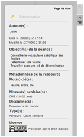
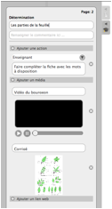

La principale nouveauté de la version 2.00 est la fiche guide. Ce panneau s'ajoute au volet de gauche comme nouvel onglet (icône toque du professeur. Cette fiche guide vous offre la possibilité de:
Ces éléments figurent sur deux types de fiche guide. La page "0" dite de titre qui décrit la ressource dans son ensemble et les pages "1" et suivantes qui décrivent l'activité sur la page en question. Le contenu de la fiche guide est lié à la page sur laquelle il se trouve. La page "0" de titre devient obligatoire, elle s'ajoutera automatiquement à vos anciens et nouveaux documents.
|
 |
 |
|
page de titre ou page 0 en mode visualisation |
page 1 et suivantes en mode édition |
L'ensemble des champs de la fiche guide appartient donc au document et permet aux utilisateurs d’avoir une meilleure visibilité du cadre pédagogique dans lequel l'activité s'inscrit.
Open-Sankoré privilégie la licence Creative Commons (CC BY-SA) pour toutes les ressources éducatives crées, dans une philosophie du libre. Les utilisateurs de la ressource devront s’informer de l’usage possible de la ressource afin de respecter le cadre du détenteur des droits.